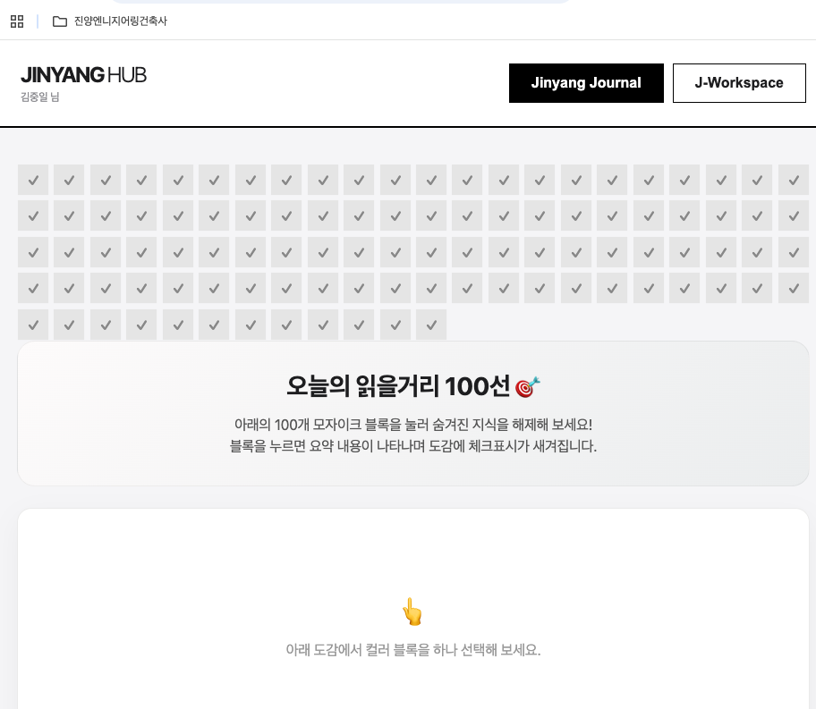

SOP 03: 레드팀 v9 감사 피드백 기반 모바일 UX/UI 고도화 실무
💡 교육 개요 (도입 배경)
본 매뉴얼은 [프로젝트 J-Platform](사내 통합 매뉴얼) 오픈 직후 실시된 레드팀(Red Team) V9 보안/UX 감사에서 지적된 '검색 기능 부재' 및 '모바일 가독성 저하' 문제를 어떻게 기술적으로 해결하고 시스템에 이식했는지 그 실무 조치 과정을 교육하기 위해 작성되었습니다.
1. 사전 준비 및 환경 구성
이 작업을 수행하기 위해서는 프론트엔드 정적 파일 구조에 대한 이해가 필요합니다. 별도의 백엔드(Node.js, Python 등) 없이 오직 브라우저와 정적 호스팅(GitHub Pages)만으로 동작하는 구조를 준비해야 합니다.
# 작업 전 디렉토리 계층 구조 확인
/J-Platform
├── docs/ # 최종 빌드된 정적 HTML이 모이는 곳
│ ├── search_index.js # ⬅️ (신규) 전체 텍스트 검색용 인메모리 DB
│ └── sw.js # ⬅️ (신규) PWA 서비스워커
├── static/
│ ├── css/style.css # ⬅️ (수정) 마이크로 타이포그래피 적용
│ └── manifest.json # ⬅️ (신규) PWA 앱 설치 매니페스트
└── generate_static.py # 빌드 파이썬 스크립트2. 핵심 문제 상황 및 해결 흐름도 (Flowchart)
레드팀 감사에서 가장 치명적으로 지적받은 것은 "수백 개의 문서를 스크롤만으로 찾아야 하는 비효율성"이었습니다. 이를 해결하기 위해 백엔드 서버 없이 동작하는 초고속 인메모리 검색(In-Memory Search) 엔진을 설계했습니다.
sequenceDiagram
participant B as 브라우저 (사용자)
participant S as search_index.js (메모리)
participant U as UI (모달)
B->>S: 1. 페이지 접속 시 인덱스 스크립트 비동기 로드
B->>U: 2. 돋보기 아이콘 클릭 -> 검색 모달 오픈
B->>U: 3. 키워드 타이핑 ("건축법")
U->>S: 4. 배열 filter() 및 indexOf() 실시간 매칭
S-->>U: 5. 일치하는 문서 제목 + 본문 하이라이팅 반환
U-->>B: 6. 0.1초 내 결과 출력 및 클릭 시 즉시 이동
3. [블라인드] 주요 조치 사항 상세
A. 초고속 전역 검색(Search) 기능 탑재
정적 웹사이트의 한계를 극복하기 위해, 파이썬 빌드 시점에 모든 문서의 텍스트를 하나의 자바스크립트 배열(`search_index.js`)로 압축하여 생성했습니다.

▲ [모의 삽도] 검색어 입력 시 즉각적으로 결과가 팝업되는 UI
B. 마이크로 타이포그래피 (모바일 가독성)
기존 위키(Wiki) 스타일의 빽빽한 글씨를, 매거진(진양저널) 수준의 편안한 레이아웃으로 변경했습니다.
word-break: keep-all;: 모바일 화면 가장자리에서 한국어 단어가 의미 단위로 끊어지도록 강제 (예: '건축사'가 '건축
사'로 잘리지 않음)line-height: 1.65;: 모바일 환경에서 스크롤 시 줄 간격 여백을 넓혀 눈의 피로도 감소box-shadow및 테두리 제거: 모바일에서는 카드 형태 대신 좌우를 꽉 채우는 Edge-to-Edge 풀스크린 레이아웃 채택
C. PWA (앱 설치 기능) 도입
모바일 기기 바탕화면에 네이티브 앱처럼 아이콘을 추가할 수 있도록 매니페스트와 서비스 워커를 적용했습니다. 특히 애플리케이션 하단에 직관적인 '홈 화면에 추가하기' 토스트(Toast) 팝업 및 영구 안내판을 삽입하여 사용자 경험을 극대화했습니다.
📚 필수 용어 해설
- PWA (Progressive Web App): 일반 웹사이트를 마치 스마트폰 앱(App)처럼 설치하고, 오프라인에서도 작동하게 만들 수 있는 웹 기술의 표준 명칭.
- Vanilla JS (바닐라 자바스크립트): React, Vue 같은 무거운 프레임워크를 전혀 쓰지 않고 브라우저에 내장된 순수 자바스크립트만을 사용하는 것. 매우 가볍고 빠름.
- In-Memory Indexing (인메모리 인덱싱): 데이터베이스(서버)를 조회하는 대신, 브라우저의 램(RAM) 메모리에 검색할 데이터를 미리 다 올려두고 찾는 방식. 데이터가 적을 때 극단적으로 빠른 속도를 자랑함.
4. AI 프롬프트 실전 예시
에이전트에게 이러한 복잡한 UX 개선을 지시할 때는, 단순히 "예쁘게 해주세요"가 아니라 디자인 레퍼런스와 기술적 구현 방식을 명확히 짚어주어야 합니다.
"현재 정적 사이트에 전체 검색 기능이 없어 불편합니다. 백엔드 없이 브라우저 단에서 동작하는 Vanilla JS 기반의 검색 모달을 만들어주세요. 파이썬 빌드 스크립트를 수정해 전체 문서 텍스트를 담은 search_index.js를 자동 생성하도록 하고, 검색어 입력 시 노란색 하이라이팅이 적용되게 해주세요."
"모바일 가독성을 진양저널 수준으로 끌어올리려 합니다. CSS 미디어 쿼리를 사용해 모바일 화면(max-width: 900px)에서만 word-break: keep-all 과 line-height: 1.65 를 적용하고, 본문 카드의 좌우 여백을 없애 풀스크린처럼 보이게 해주세요."이 교육 자료를 통해, 타 부서에서도 피드백을 어떻게 시스템 기능으로 전환하는지 그 프로세스를 숙지하시기 바랍니다.
화면 하단 메뉴바 정중앙의 [공유] 아이콘을 누른 뒤, 메뉴를 살짝 위로 올려 [홈 화면에 추가]를 선택하세요.
화면 우측 상단 또는 하단의 [⋮] 메뉴 아이콘을 누르고, [홈 화면에 추가] 혹은 [현재 페이지 추가]를 선택하세요.
문서 버전: v1.19